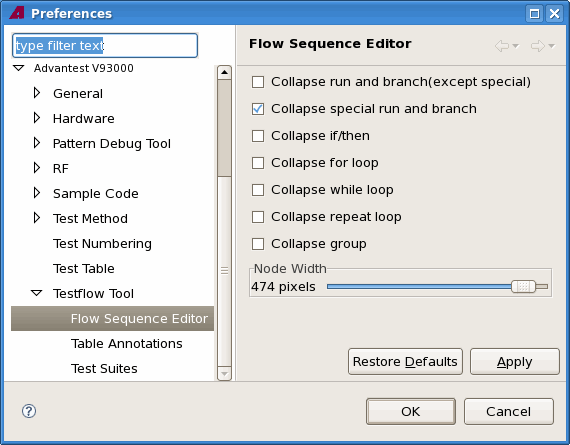

Flow Sequence Editor preference page
The preference page allows you to define how nodes are displayed when the Flow Sequence Editor is opened and when the node is inserted in the testflow.
For example, if you select Collapse for loop checkbox, the loop block is collapsed when the Flow Sequence Editor is opened; if you clear this checkbox, the loop block is expanded when the editor is opened.
You can also set the width of all the nodes displayed in the Flow Sequence Editor, except for the bin nodes.
The following displays the Flow Sequence Editor preference page.

Functional changes
- Introduced in SmarTest 6.5.2
- SmarTest 6.5.3: New option Node Width.